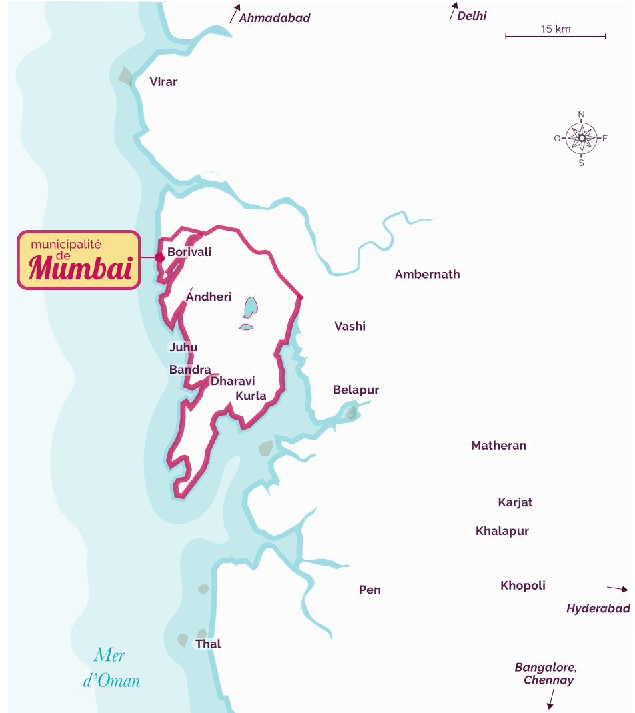
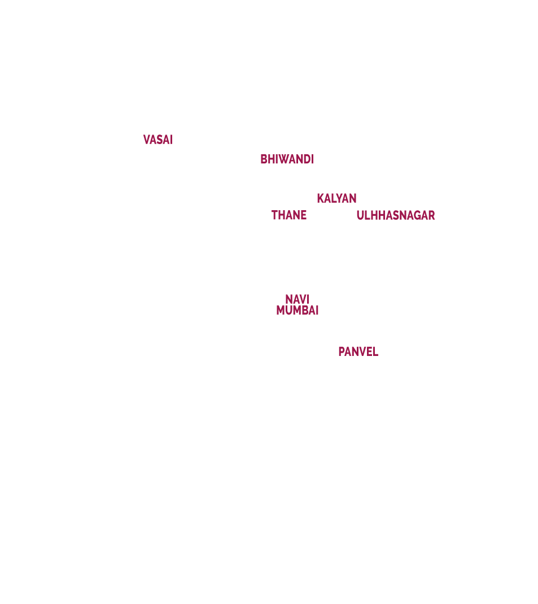

L’organisation spatiale de Mumbai
Urbanisation et quartiers de la ville
Aménagements urbains


Sources : P. Cadène, Atlas de l’Inde, © Autrement, 2008, et Mumbai Metropolitan Region Development Authority.
Sources : P. Cadène, Atlas de l’Inde, © Autrement, 2008, et Mumbai Metropolitan Region Development Authority.